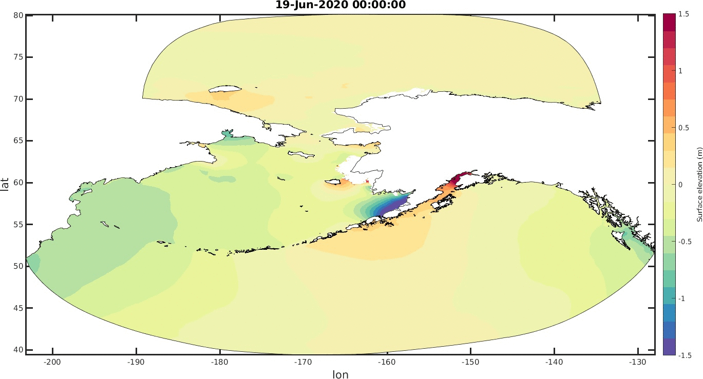
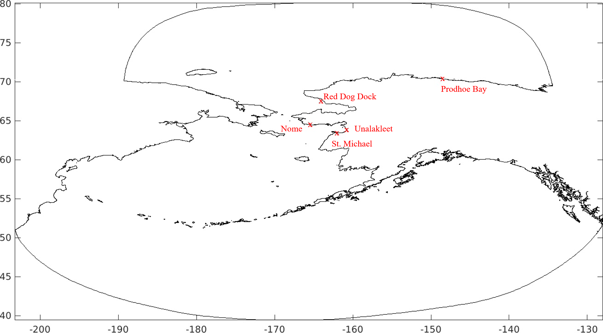
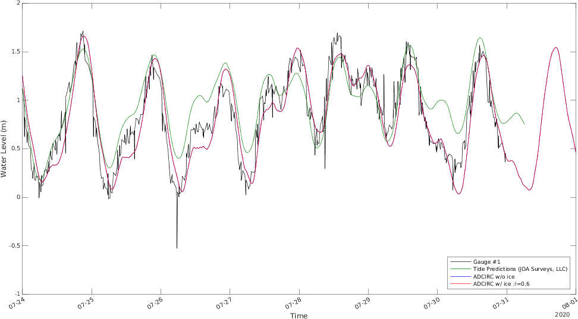

DISCLAIMER: this model is under development and testing, for study only.
This forecasting system is based on Studies on Parameterizations of Sea Ice Effect in a Storm Surge Model for Western Alaska.
Fig.1 shows the flowchart for this forecasting system. In order to get a high quality initial condition to start the forecast, the forecast simulation for each day will run 10 days hindcast, 3 days gap forecast, and finally 5 days for forecast. Here, the system includes a gap forecast because we can only get the hindcast meteorogical products till 3 days before. In the recent version of this forecasting system, it will download the GFS(Global Forecast System) meteorological products (wind, pressure, ice concentration), which including the data from 13 days before to 5 days after the present date. After downloading the data, the simulation will start from 13 days before the present date, running 10 days hindcast with 5 days spin up using GFS reanalysis products (https://nomads.ncdc.noaa.gov/data/gfsanl/), then running the rest days by using forecast products (https://www.ftp.ncep.noaa.gov/data/nccf/com/gfs/prod/).
Forcing 8 harmonic constituents on the open ocean boundaries,
4 semi-diurnal : M2, N2, S2, K2;
4 diurnal : K1, Q1, O1, P1.
The mesh is generated by using OceanMesh2D.
For the parameters of ocean side mesh used in the OceanMesh2D:
min_el=1000, max_el=20000, wl=300, dt=2, grade=0.2, R=2, slp=20, dis=0.35, max_el_ns=1000,
and several sepcify bounding boxes for bays and inlets (Cook Inlet, Bristol Bay, Aleutian Islands, Kotzebue Sound, St. Lawrence Island) are set for min_el=200.
For the floodplain side, there are two floodplains in the mesh,
the first one is located at the north of Alaska, the second one is at Yukon Delta:
for the first one min_el=200, the second one min_el=100 and the other parameters are set the same as ocean side.
For the bathymetry data, we interpolated the 'topo15_compressed.nc' as a background bathymetry and interpolated the 'crm_southak.nc' wherever the data is available. In the bathymetry figure, the dark green areas above 0 meter are flood plains.


Animation, 6 hourly output. The simulation result in the animation is using ADCICR with ice parameterization.

NOTES: the comparion results started from 8 days before the present date, in the following plots, including 5 days hindcast validation, 3 days gap forecast results and 5 days forecast results. Except the St. Michael station, the results of the other stations are updated automatically on the morning of everyday. The positions of stations are showed in the following figure.
Nome station recovered from 04-29-2020, https://tidesandcurrents.noaa.gov/stationhome.html?id=9468756.

https://tidesandcurrents.noaa.gov/stationhome.html?id=9491094

https://tidesandcurrents.noaa.gov/stationhome.html?id=9497645

https://tidesandcurrents.noaa.gov/stationhome.html?id=9468333

Gauge data is from JOA Surveys, LLC (http://joasurveys.com/rtwl/stmichael/), without filtering.
The real time water levels derived by Global Navigation Satellite System Reflectometry (GNSS-R) based tide gauge (AT01) in St. Michael, refer to https://www.gpsworld.com/a-tidal-shift-monitoring-sea-level-in-the-arctic-using-gnss/.
